If I think
it's interesting,
just give it a try
Cause only live once
my status
出生日期：2003/03/20
故鄉：日本 群馬縣 高崎市
大學：台灣 中原大學 商學院 資訊管理學院
身高：174cm
體重：61kg
about me
self-introduction
我有很多好奇心，我總是嘗試我感興趣或 我想嘗試的事情。 因此，我能夠在各個領域獲得經驗。 我喜歡笑、吃和做運動。 我特別喜歡足球、 網球、卓球、排球和羽毛球。 我最喜歡的台灣菜是“蛋餅”。我經常把它 早餐吃。 休閒時，我經常在山上騎摩托車，和我的 朋友一起出去玩。
my skills～專業技能～
piano
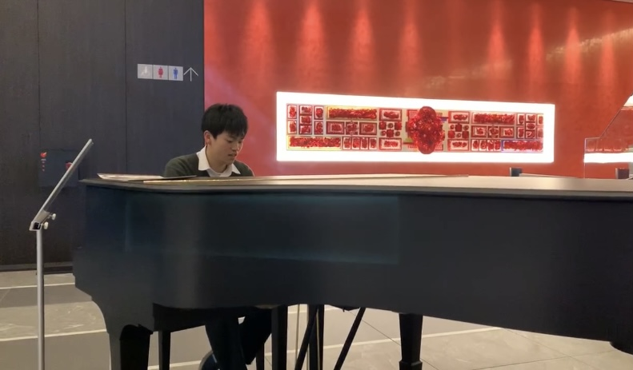我從國小一年級的時候開始學彈鋼琴了。雖然沒有參加過正式的比賽，但是在國中的時候，學校內的合唱比賽，我被獲選了最優秀伴奏者獎。除此之外，在中原大學有參加鋼琴社。有空時候，常常會去彈一彈。 去看影片
soft tennis
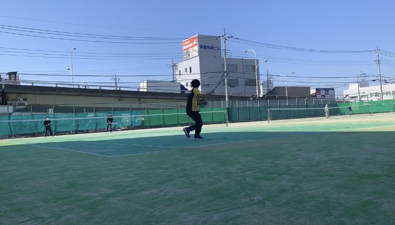我在國中的時候有參加軟式網球社。軟體網球就是在日本有很多人打的網球。受到我哥哥的影響，開始訓練打網球。由於每天努力的練習，我在故鄉城市的比賽獲得了第一名。來台灣之後，我很久沒有打網球，但是由於我這學期修網球課，最近開始訓練硬式網球了。 去看影片
volleyball
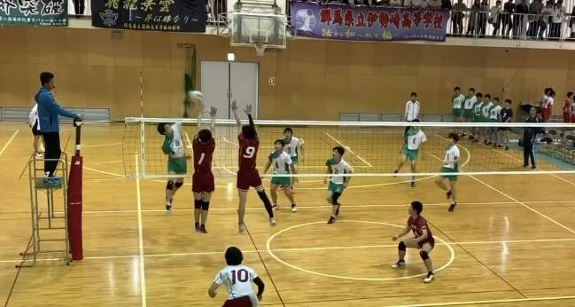我在高中二年級的時候，在體育課打排球。那時候我排球隊的朋友邀請我加入排球隊。在那之後，每天下課之後跟隊友一起很努力的訓練了。但是我剛剛升上三年級的時候，因為疫情的關係，我們都沒辦法做活動。所以我只能打一年多而已了。雖然是我跟隊友們一起訓練的時間很短，但是那是對我來說很特別的回憶。 去看別的照片
chinese
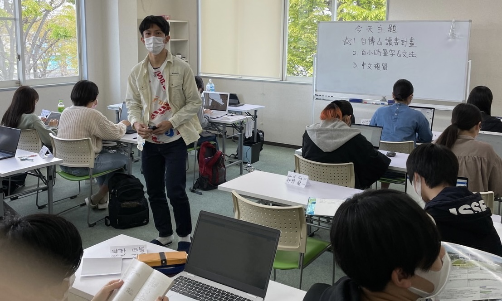我在高中三年級的時候，為了來台灣留學開始學中文了。現在我已經在台灣過一年了。雖然我中文還是不是很好，可是我自己覺得比我剛來台灣的時候有進步了一點。我在台灣剩下的兩年多，我希望能夠把自己的中文能力更進步多。 去看影片
cooking
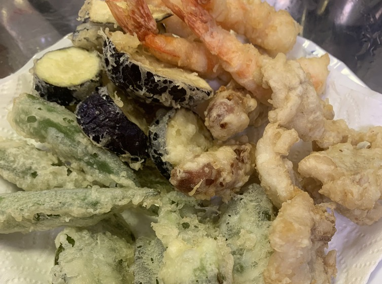我從小時候，是因為我媽媽煮的料理太好吃了，我就想到我也想做這麼好吃的料理，所以常常會煮料理給吃家人。有吃過我做的料理的人幾乎都跟我說很好吃，但是我不知道是真的好不好吃。 去看別的照片
my resume
學歷
-
- 2006
- 高崎健康福祉大学附属幼兒園
一個位於群馬縣高崎市的幼兒園。在這所幼兒園，我獲得了在附屬大學高崎保健福祉大學校園實習等其他幼兒園無法獲得的經驗。另外，幼兒園是人生中第一個認識很多人的地方，是在這裡我學會瞭如何與人交往，如何建立友誼。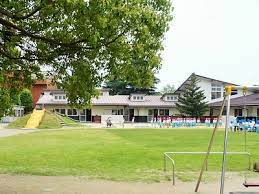
-
- 2009
- 高崎市立佐野國民小學
上小學的時候，好奇心旺盛，好動，所以經常做壞事，被老師罵。 小學四年級、五年級、六年級的時候，我是學校樂隊的成員，負責大鼓。 放學後，比如空手道、鋼琴、游泳、英語會話和體操、我忙著做很多事情。
-
- 2015
- 高崎市立佐野國民中學
一入學國中的時候，排球社、體操社和軟式網球社之間左右為難，最後我加入了軟式網球社。有很多我小學時沒有的活動，比如委員會活動、社團活動、文化節，我能體驗到了很多。
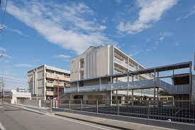
-
- 2018
- 東京農業大学第二高級中學
人生中第一次的入學考試後，我進入了這所學校，並在排球社團和學習方面付出了很多努力。我結識了許多好朋友和老師，這學校充滿了美好的回憶。
-
- 2021
- 中原大學 資訊管理學系
工作經驗
獎狀及證書
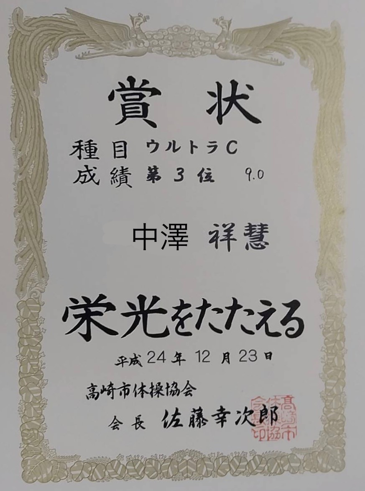
2012
高崎市体操競技比賽
第三名
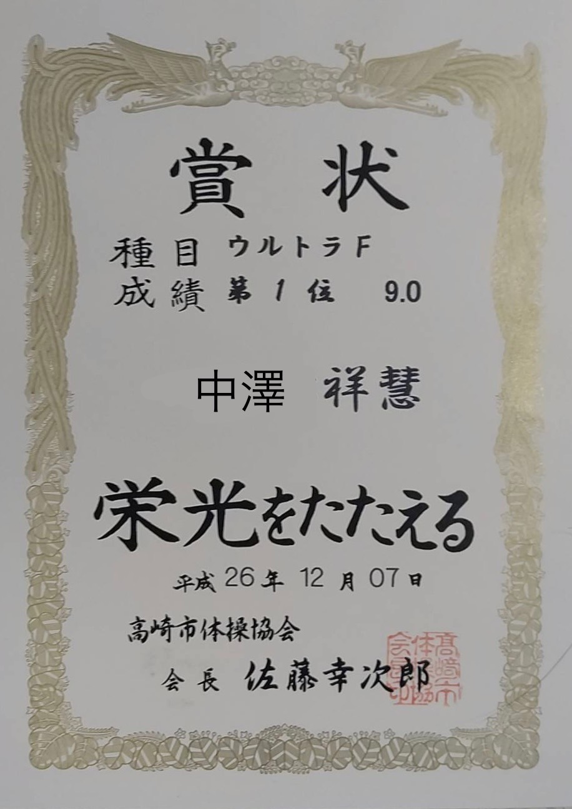
2014
高崎市体操競技比賽
第一名
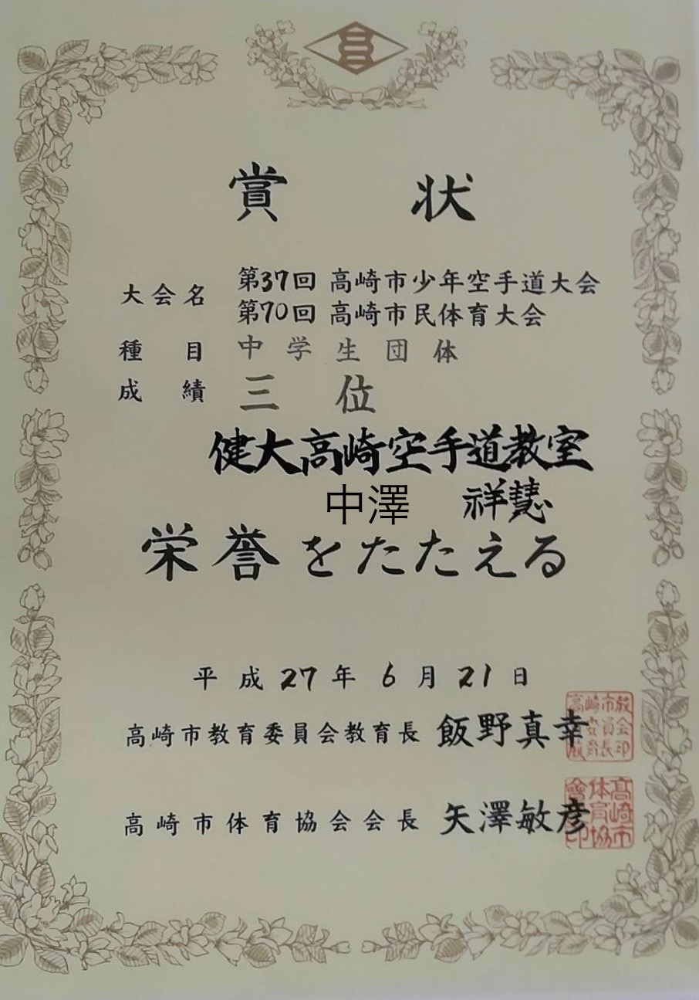
2015
高崎市空手道比賽
第三名
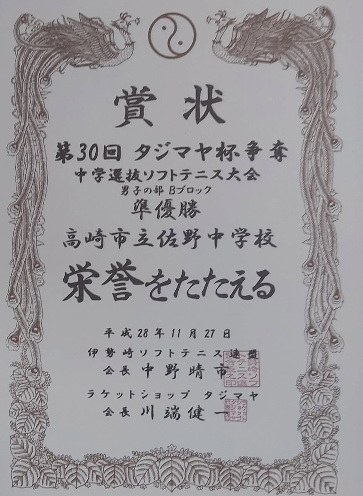
2016
北關東軟式網球比賽
第二名
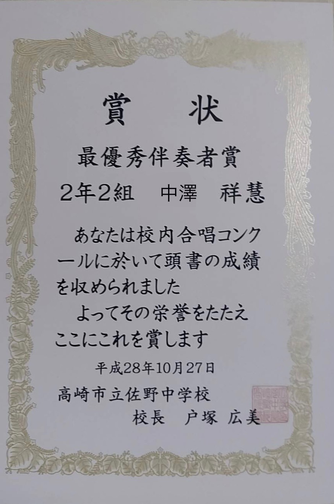
2017
校內合唱比賽
最優秀伴奏者獎
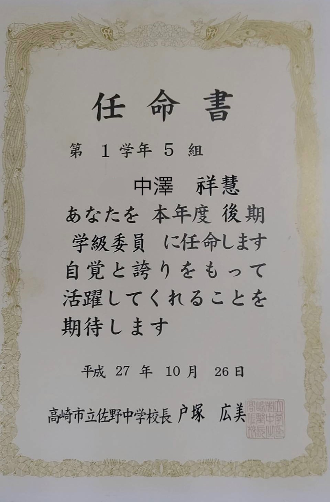
2015
任命書
班代
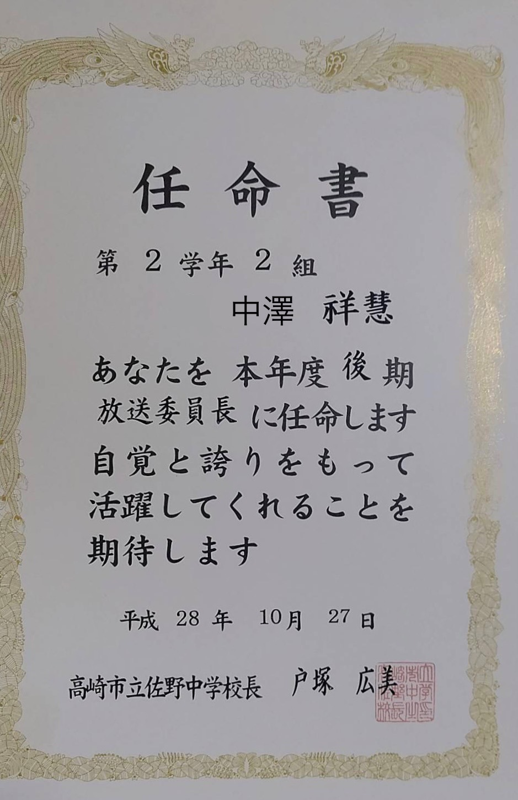
2016
任命書
廣播委員長
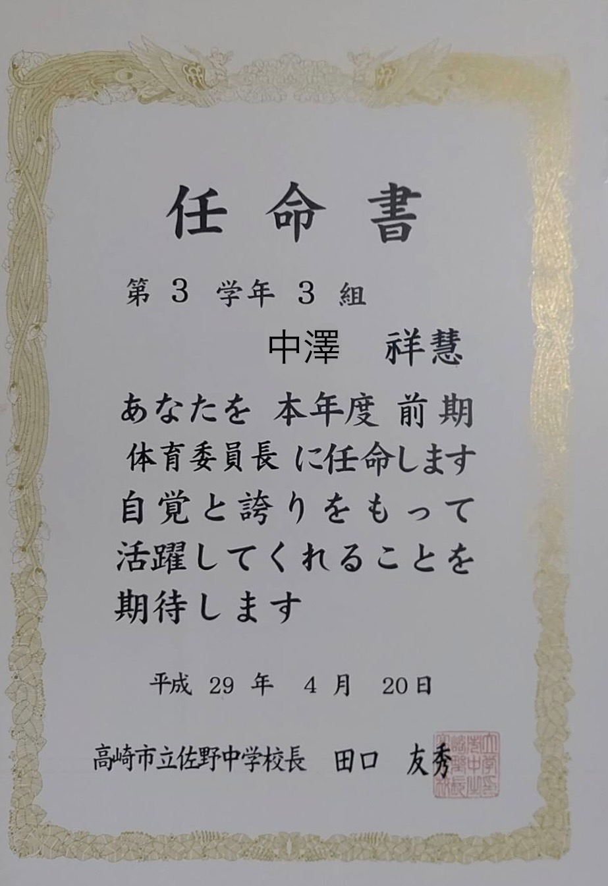
2018
任命書
体育委員長
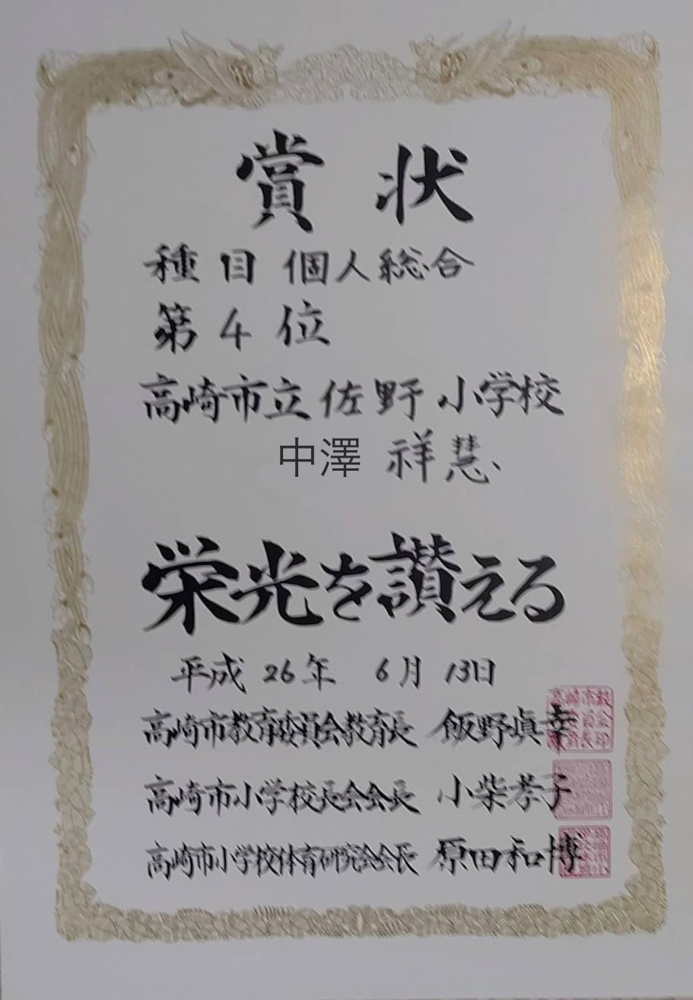
2014
高崎市國小体操比賽
第4名

2017
高崎市市民體育比賽 軟式網球
第一名
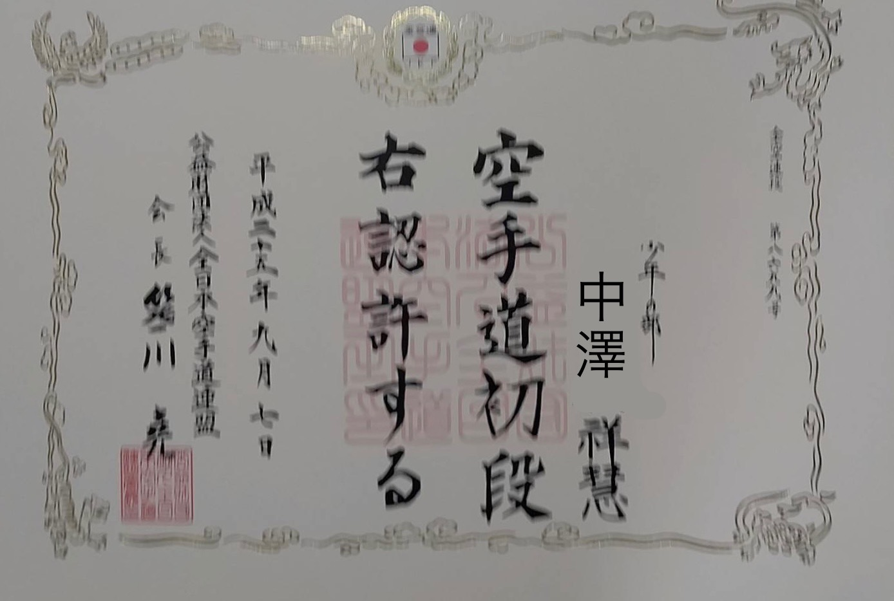
2013
空手道
初段 黑帶